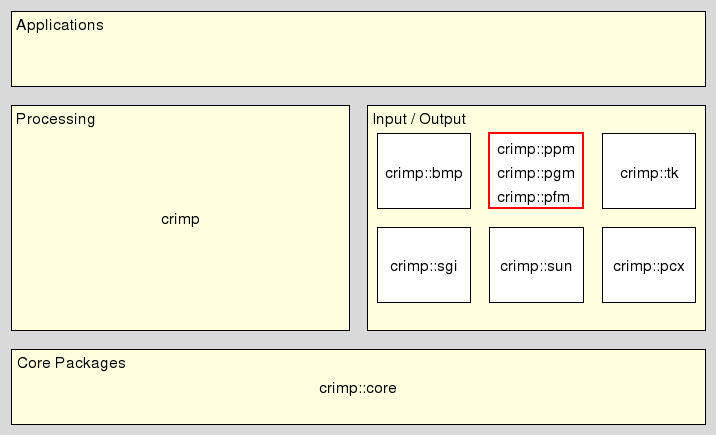

crimp_pgm - CRIMP - PGM handling, NetPBM
This package provides commands for the conversion of CRIMP images to Portable Greymaps (PGM) and vice versa.
For a basic introduction of the whole CRIMP eco-system please read the CRIMP - Introduction to CRIMP (sic!). The basic concepts used here, like images, image types, etc. are described in the reference manpage for the CRIMP - Foundation. We will not repeat them here, but assume that the reader knows them already.
In the overall architecture this package resides in the middle layer of the system's architecture, between core and applications, as shown at

The commands it provides all fall into the I/O category of the general design.
This method extends the ::crimp read ensemble. It takes the (possibly binary) string holding an image in the PGM format and returns an image of type rgb containing it.
The package extends the above ensemble with support for the following formats
The plain ASCII format of portable grey maps, as per http://en.wikipedia.org/wiki/Netpbm_format.
The raw binary format of portable grey maps, as per http://en.wikipedia.org/wiki/Netpbm_format.
The supported image types are grey8, rgb, rgba, and hsv.
Export PGM image, Export image, PGM, Import PGM image, Import image, PGM, PGM, PGM image export, PGM image import, computer vision, document processing, image, matrix, photo, vector
Copyright © 2011 Andreas Kupries
Copyright © 2011 Documentation, Andreas Kupries